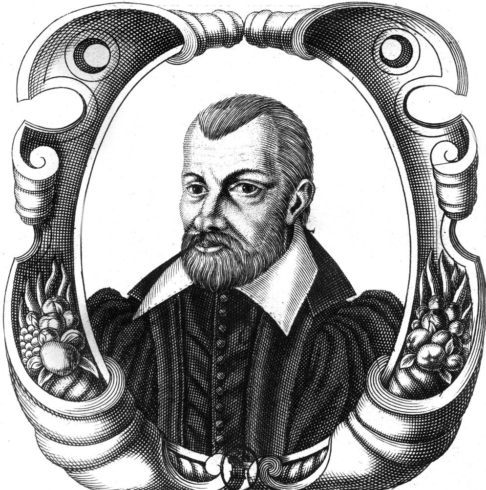

Жан Боден
1530 г. – 1596 г.

Детство и юность
Жан Боден родился в семье мастера портновского цеха г. Анже. В раннем возрасте его отдали в местный орден Кармелитов для получения образования. Затем он занимается изучением гражданского права в Академии Тулузы -- одного из крупнейших университетских центров во Франции XVI века. После окончания академии он некоторое время преподает в ней.
Так и не получив профессорского звания, в 1561 году Боден едет в Париж, чтобы заниматься там адвокатской практикой. Вскоре после своего прибытия в Париж, он сближается с кружком, который позже стал ядром группы, стоящей в оппозиции к обеим главным партиям гражданской войны. Эта группа, известная под названием «Политики», отстаивала веротерпимость и сильную королевскую власть.
Философия Бодена
Философские взгляды
Жан Боден впервые сформулировал и широко обосновал понятие суверенитета как существенного признака государства: «Суверенитет - это абсолютная и постоянная власть государства... Абсолютная, не связанная никакими законами власть над гражданами и подданными. Власть государства постоянна и абсолютна; это - высшая и независимая власть как внутри страны, так и в отношениях с зарубежными державами. Выше носителя суверенной власти - только бог и законы природы».
Суверенитет, по Бодену, означает, прежде всего независимость государства от папы римского, от церкви, от германского императора, от сословий, от другого государства. Суверенитет как верховная власть включает права издавать и отменять законы, объявлять войну и заключать мир, назначать высших должностных лиц, осуществлять верховный суд, право помилования, права чеканить монету, устанавливать меры и веса, взимать подати.
В учении о государстве Боден во многом следует Аристотелю, но не Аристотелю, искаженному и мистифицированному средневековой схоластикой, а подлинному Аристотелю, осмысленному в свете последующей истории политико-правовых учреждений.
Государство Боден определяет как правовое управление многими семьями и тем, что у них общее, на основе суверенной власти. Государство - именно правовое управление, сообразное со справедливостью и законами природы; правом оно отличается, как отмечал Цицерон, от шайки разбойников или пиратов, с которыми нельзя заключать союзов, вступать в соглашения, вести войну, заключать мир, на которых не распространяются общие законы войны.
Семью Боден называет основанием и ячейкой государства. Государ- ство - совокупность именно семей, а не отдельных лиц; если они не будут соединены в семейства, то вымрут, а народ, составляющий государство, не умирает. Подобно Аристотелю, он различает в семье три вида властеотношений: супружеские, родительские и господские. В отличие от Аристотеля Боден не был сторонником рабства. Он считал рабство не всегда естественным, источником смут и волнений в государстве. Боден стоял за постепенную отмену близких к рабству отношений феодальной зависимости там, где они еще сохранялись.
Государство, основанное на общности имущества, писал Боден, “было бы прямо противоположно законам бога и природы”. Частная собственность связана с законами природы, поскольку “естественный закон запрещает брать чужое”. “Имущественное равенство гибельно для государств”, - неустанно повторял Боден. Богатые и бедные существуют в каждом государстве; если попытаться уравнять их, признать недействительными обязательства, отменить контракты и долги, “то нельзя ждать ничего, кроме полного разрушения государства, ибо утрачиваются какие бы то ни было узы, связывающие одного человека с другим”.
Первостепенное значение Боден придавал форме государства. Он отвергает распространенное деление форм государства на правильные и неправильные, поскольку оно выражает лишь субъективную оценку существующих государств. Сторонники власти одного человека называют ее “монархия”, противники - “тирания”. Приверженцы власти меньшинства именуют такую власть “аристократия”, недовольные ею - “олигархия” и т. д. Между тем, рассуждал Боден, суть дела только в том, кому принадлежит суверенитет, реальная власть: одному, немногим или большинству. На том же основании Боден отрицает смешанную форму государства - власть никак не разделить “поровну”, какой-то элемент будет иметь решающее значение в государстве; кому принадлежит высшая власть принимать законы, таково и есть государство в целом.
Рассматривая различные формы государства, Боден пишет, что целесообразность и прочность каждой из них зависит от исторических и природных особенностей разных стран и народов. На севере живут народы храбрые, создавшие сильное войско; у южных народов развит ум, поэтому там процветают науки. На севере опорой правительства является сила, в средней полосе - разум и справедливость, на юге - религия. На государство влияют также горы, равнины, плодородие и бесплодие почвы.
К демократии Боден относился отрицательно: в демократическом государстве очень много законов и властей, а общее дело в упадке; толпа, народ - “зверь многоглавый и лишенный рассудка” - не может постановить что-нибудь хорошее, преследует богатых, искореняет и изгоняет лучших, избирает худших.
Не одобрял Боден и аристократию, государство, где власть принадлежит коллегии знатных: среди аристократов умных людей мало, в результате правит глупое большинство; принятие решений связано с раздорами, с борьбой партий и группировок; государство недостаточно энергично подавляет возмущения народа, вечно восстающего против вельмож. По тем же причинам аристократия немыслима в большом государстве.
Наилучшей формой государства Боден считал монархию. Монарх так же естественно, как бог Вселенной, без помех повелевает подданными; он обладает властью по собственному праву (вначале приобретенному силой, затем передаваемому по праву наследования). “Кроме бога нет никого, более высокого на земле, чем суверенные монархи. Они поставлены самим богом как его наместники, дабы править другими”.
Упоминания о боге не играют решающей роли в аргументации Бодена. Он ссылается на то, что о прочности и естественности монархии свидетельствует исторический опыт - монархии существуют тысячи лет и это никого не удивляет; если же республика просуществует всего лет триста-четыреста, то все уже поражаются такому диву, настолько естественному порядку вещей противоречит долговременное существование республики. Боден утверждал, что монархия особенно необходима в больших государствах. В монархии обеспечены компетентность (советуют многие) и энергичность власти (решает один).
Ссылаясь на разум и историю, Боден писал, что первоначально все государства созданы завоеванием и насилием (а не путем добровольного соглашения, как утверждали некоторые тираноборцы). В результате справедливой войны возникли господские (вотчинные) государства, в которых монарх правит подданными как отец семьей. Таковы монархии Востока.
В Европе, рассуждал Боден, господские государства превратились в “законные монархии”, в которых народ повинуется законам монарха, а монарх - законам природы, оставляя подданным естественную свободу и собственность. Монарх не должен нарушать “законы бога и законы природы”, которые возникли раньше всех государств и присущи всем народам. Монарх, по мнению Бодена, должен быть верен слову, соблюдать договоры и обещания, установления о престолонаследии, о неотчуждаемости государственного достояния, уважать личную свободу, семейные отношения, вероисповедания (чем больше их будет, тем лучше, - меньше возможностей создания влиятельных враждующих группировок), неприкосновенность имущества.
Боден оспаривал распространенное среди тираноборцев мнение, что монархия должна быть избирательной - в период выборов неизбежны смуты, раздоры и междоусобицы; выбраный монарх не заботится об общем достоянии, поскольку неизвестно, кто сменит его на престоле.
Боден считал наилучшей королевскую монархию - государство, в котором верховная власть (суверенитет) целиком принадлежит монарху, а управление страной (порядок назначения на должности) сложное, т. е. сочетающее принципы аристократические (на ряд должностей, преимущественно в суде и войске, король назначает только знатных) и демократические (некоторые должности доступны всем). Мудрым учреждением королевской монархии Боден называл Генеральные штаты. Они соединяют сословия (духовенство, дворянство, третье сословие), умеряют, но не ограничивают верховную власть. Они улучшают управление страной, предавая гласности злоупотребления должностных лиц, высказывая различные мнения. Хотя Генеральные штаты могут давать королю только советы, а принимать решения не могут, государь не вправе облагать подданных податями без их согласия, ибо, по естественному закону, никто не имеет права брать чужое достояние без воли владельца, утверждал Боден. Лишь в самом крайнем случае монарх может самолично налагать налоги для пользы государства (но Боден готов признать за подданными право пассивного сопротивления тирану в виде отказа платить подати).
Исходя из разработанной им концепции суверенитета, Боден ставил вопрос о сложных государствах. Он различал два вида государственных соединений. К соединениям, основанным на неравенстве, он относил государственные образования, включающие части, находящиеся в вассальной или иной зависимости от суверена, а также федерацию, которая, по мысли Бодена, основана на неравенстве, ибо суверенитетом обладает только союз в целом, а не отдельные его части (примером федерации он считал Священную Римскую империю). Второй вид соединений государств основан на равенстве - такова Швейцарская конфедерация, каждый из членов которой сохраняет суверенитет.
Личная жизнь
В мае 1587 года к Бодену по наследству от тестя переходит пост генерального прокурора Лана. А ещё через некоторое время сын портного становится мэром Лана, причём на этом посту он продержался два срока подряд, хотя ничем особенным не отличился. На посту прокурора он старался никогда не идти против своей совести и, например, отстоял жизнь человека, которого хотели казнить по политическим соображениям. Но зато по его собственным признаниям принимал участие в процессах над 200 женщинами по обвинению в колдовстве, многие из которых закончили жизнь на костре. По мнению Бодена, судья, препятствующий расследованию дел о колдовстве, сам заслуживал костра.
Смерть
В 1587 году Жан Боден наследовал от своего тестя должность королевского прокурора.
Скончался Боден в очень преклонном возрасте , но не от старости , а от чумы. Это произошло в 1596 году в Лионе. Как замечал позже один из многочисленных врагов Бодена Жак Жийо , Боден умер “не сказав ни слова об Иисусе Христе”.
Имя Жана Бодена официально не предавалось анафеме , но после того как стало известно о его произведении “Диалог семерых о религии” (ненапечатанной , но имевшейся в значительном количестве в рукописях) , все заслуги этого философа были надолго забыты.
Основные труды
Боден написал около 10 сочинений, многие из которых активно переиздавались в XVII веке.
- «Метод лёгкого познания истории» («Метод, облегчающий познание истории») (1566, на латыни). (Methodus ad facilem historiarum cognitionem, 1566). В 2000 году в серии «Памятники исторической мысли» (М., Изд-во «Наука») вышел русский перевод этой книги, сделанный М. С. Бобковой на основе 2-го издания (1572 г.).
- «Ответ на парадоксы г-на Мальтруа…» (1568). (Paradoxes de M. de Malestroit touchant le fait des monnaies et l’enrichissement de toutes choses) — работа по экономике, посвящённая проблеме инфляции, вызванной резким увеличением находящегося в обороте золота и серебра, привозимого из Нового Света, где Боден формулирует количественную теорию денег.
- «Шесть книг о государстве» (в 6-ти книгах, Париж, 1576). (Les six livres de la République ). В 1586 году автор сам переводит её на латинский язык в несколько изменённом виде.
- «Демономания колдунов» (1580, на французском). (La Démonomanie des Sorciers). В ней Боден доказывает реальность существования ведьм и законность их преследования, а также решает юридико-процессуальные проблемы расследования и рассмотрения этой категории судебных дел.
- «Heptaplomeres sine colloquium de rerum sublimum areanis abditis» (1581 г.) («Семичастный разговор о секретах высших истин», или «Беседа семерых о сокровенных тайнах возвышенных вещей») — эта книга представляет собой спор представителей мировых религий и натурфилософа о преимуществах каждой из них.
- «Почему я стал лигером»: памфлет, 1589 г. Выдержал 11 изданий Лиги. Позднее Боден утверждал, что памфлет являлся частным письмом, которое было опубликовано без его ведома.
- Amphithéâtre de la nature (1595).
- Universae naturae theatrum (1596) (по некоторым источникам, она опубликована в 1590 году) — («Всеобъемлющий театр природы») — работа по естественно-научным вопросам.
Галерея